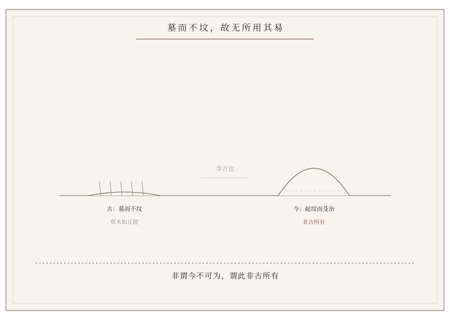

檀弓上 · 三·五十四 · 第 257 课
易墓，非古也。注「易谓芟治草木，不易者，丘陵也」。
说什么事：把墓地整理得干干净净，这不是古法。
落在哪一层：礼，兼及礼器与礼意。论「治与不治」。
为何编在此位：上节论服之出入，此节论地之治否。皆礼之有权：可为者不为，亦是一种礼。
【经】易墓，非古也。
【注】易谓芟治草木，不易者，丘陵也。
【疏】此一节论墓内不合芟治之事。墓谓冢旁之地，易谓芟治草木，不使荒秽；不易者，使有草木如丘陵然。言「易墓，非古也」，则古者殷以前墓而不坟，是不治易也。
易 注「易谓芟治草木」。易，治也。注音「以豉反」。
芟治 刈除整治。
非古 非古之法。
丘陵 注「不易者，丘陵也」。任草木自然如丘陵。
整治墓地（刈去草木），这不是古法。
此节五字，一断语。疏补出所以然：古者殷以前「墓而不坟」——不起坟，则地上与平地无异，草木自然生长，无须芟治；后代起坟、立树、筑垣，于是有「易墓」之事。故「非古」者，非谓今不可为，是谓此非古之所有。此五字最见记礼者之笔法：以「非古」二字存古今之别，而不以古律今。
第一层 易之训 注「易谓芟治草木」。易非变易之义，是治也。一字之训，全节之义由此定。
第二层 墓而不坟 疏引古者「墓而不坟」为据。坟者，聚土使高；墓者，其地而已。不起坟，故不必芟治；不起坟，故草木与丘陵同状。
第三层 非古之两读 一读为讥今：今人易墓，非古法，当止。一读为存别：此非古所有，今有其事亦无妨。疏只言「古者不治易」，不下断语，其意近于后者。
第四层 丘陵之喻 注「不易者，丘陵也」。以丘陵喻墓地，是把人的死所还给地。治之则见人之功，不治则见地之自然。
与今日何干 墓园修剪、坟头除草、碑石翻新——此节给的尺是：这些皆非古礼，做与不做都不犯礼；犯礼者在「以今律古」，不在「为与不为」。
| 左 | 右 |
|---|---|
| 易墓 | 芟治草木，不使荒秽 |
| 非古也 | 古无此事 |
| 墓而不坟 | 不起坟，故无须芟治 |
| 不易者如丘陵 | 任草木自然 |
| 治之见人之功 | 不治见地之自然 |
画一片旷野上的两处葬地，视点略高。左侧一处与地面齐平，草木自然生长，看不出坟形；右侧一处起了高坟，坟上草木已被刈净，坟周有整理过的痕迹。两处之间一条浅径。远处一带丘陵。不写文字、不画人面细节。赭色只用在右侧坟头一束被刈下的草上。
